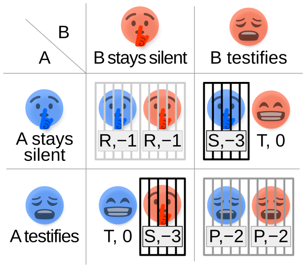
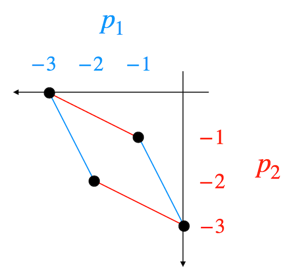
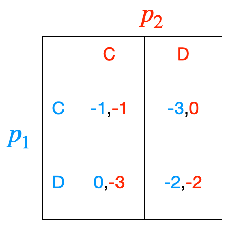
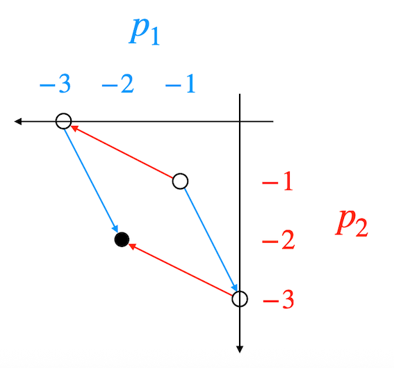
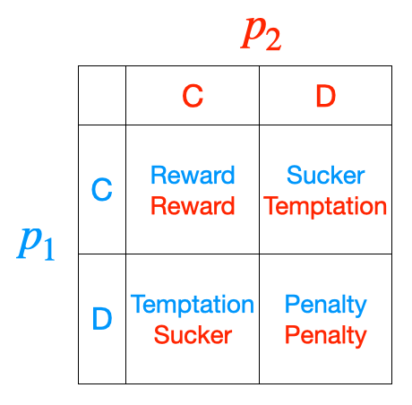
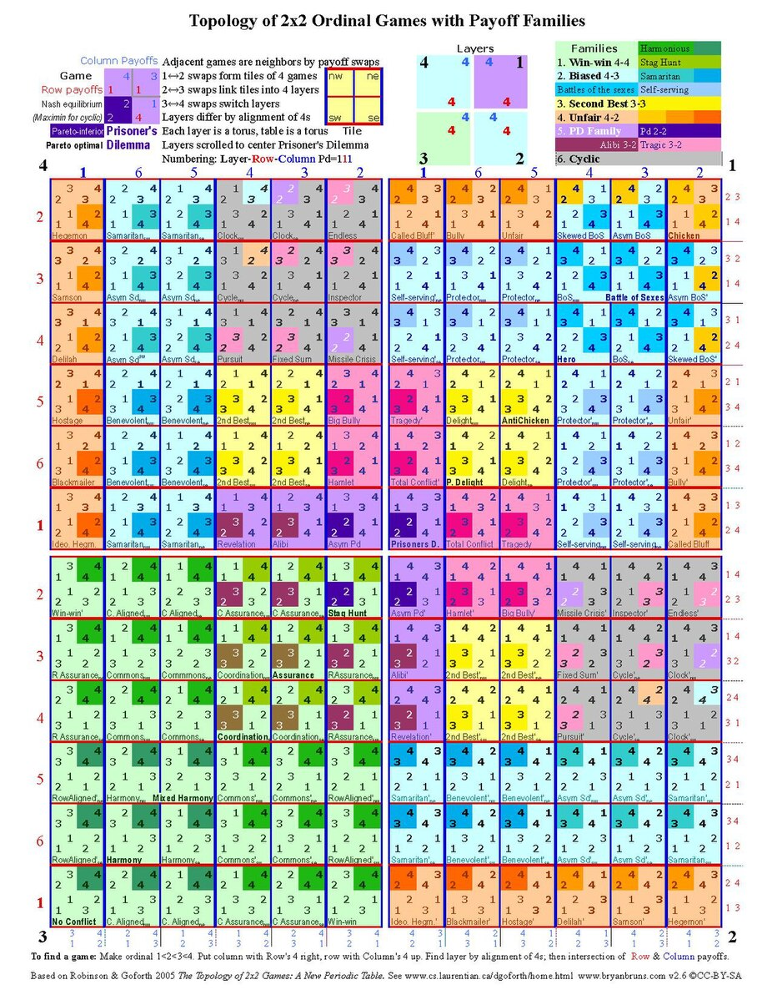
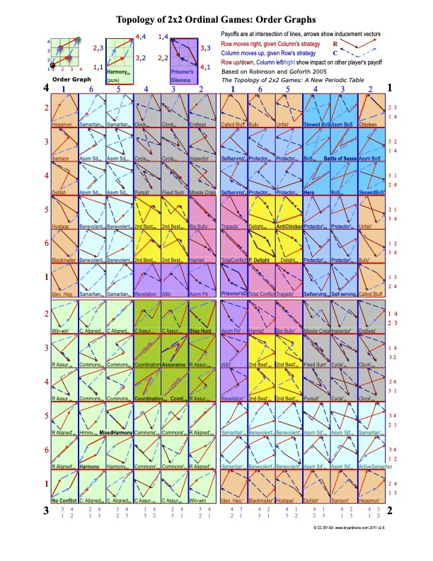

Week 10: Game theory#
Game theory was first formalised by John von Neumann and Oskar Morgenstern in their landmark 1944 book Theory of Games and Economic Behavior. It gained prominence during the Cold War, when strategists sought mathematical tools to analyse conflict, negotiation, and deterrence.
At its heart, game theory is the quantitative study of strategic interaction. It provides a framework for situations with multiple decision makers, or players, where the outcome for each individual depends not only on their own choices but also on the choices of others. This makes game theory a natural companion to the study of complex systems, many of which involve interacting agents (people, organisms, firms, or institutions etc) whose local decisions shape collective behaviour.
Game theoretic models shed light on why rational self-interest often leads to tension between what is best for the individual and what is best for the group. Traditionally, they have focused on small, stylised settings with only a few players, making the mathematics manageable and the strategic logic clear. With greater computing power and advances in complex systems theory, game-theoretic insights about incentives and stability can now be embedded within large-scale models, linking clear strategic reasoning to rich collective dynamics.
We’ll use the Prisoner’s Dilemma to explore the basics of game theory.
It’s the most famous example in the field. First discussed in the 1950s, it captures the paradox at the heart of many complex systems — that rational choices at the individual level can undermine the collective good.
Games#
A “game” is not about entertainment but a carefully designed representation of strategic decision-making.
It is defined by three key ingredients: who makes the decision, \(P\), what decision they make, \(A\), and what reward they get as a result of the decision of all players, \(U\).
Formally:
\(P\): players
A set of decision makers in a game \(\{p_1, p_2, \ldots, p_n\}\) (this is an n-player game)
\(A\): actions
A set that tells us what each player can do in the game \(\{a_1,a_2, \ldots, a_n\}\)
e.g. the actions of player 1 \(a_1=\{\text{up}, \text{down}\}\)
\(U\): utility/payoff
A set of rewards (or punishments) \(\{u_1, u_2, \ldots, u_n\}\)
Each element is a function for each player
e.g. the utility of player 1 in a 2-player game if \(p_1\) plays the action \(\text{up}\) and \(p_2\) plays the action \(\text{down}\) is \(u_1(\text{up}, \text{down})=2\)
Assumptions#
Game theory hinges on some critical assumptions.
The players are rational utility maximisers.
Rational means they don’t make mistakes when they choose the action.
Utility maximiser means they always choose the action that’s best for them.
Within this major assumption are the following:
All players understand the game
Players prefer the better payoff
No other considerations (e.g. reputation, loyalty, opportunity for retribution)
No communication (no negotiating, making promises or threats)
Behavioural Game Theory relaxes these assumptions but we don’t get into that in this unit.
Modelling games#
Strategy space#
The strategy space is the set of all possible action profiles across players:
where \(A_i\) is the action set of player \(p_i\).
Each element \(s \in S\) is a tuple \((a_1,a_2,\ldots,a_n)\) describing one possible combination of actions.
Payoff functions#
For each profile \(s \in S\) we assign a payoff function:
which gives the utility (reward/cost) for player \(p_i\).
Payoff matrix (normal form)#
For 2-player games, it is convenient to represent the payoff structure with a matrix:
Player 1’s actions label the rows.
Player 2’s actions label the columns.
Each cell of the matrix corresponds to one strategy profile \(s\in S\), and the entries show the utilities \((u_1,u_2)\) corresponding to that action pair.
This compact form is called the normal form of a game.
Outcomes#
Although the models are stylised, they are powerful. By treating decisions as part of a deterministic dynamical system, game theory adds rigour to the study of human behaviour.
When analysing a game, we care about the properties of outcomes (not just individual strategies). Solutions focus on whether outcomes are stable (such as Nash equilibria) and whether they are efficient (such as Pareto optimal outcomes).
Pareto Optimality: An outcome is Pareto optimal if no player can be made better off without making at least one other player worse off. These outcomes form the Pareto frontier.
Dominant Strategy: A strategy is dominant if it gives a player at least as good a payoff as any other, regardless of what others do. If it is strictly better in every case, it is a strictly dominant strategy.
Dominated Strategy: A strategy is dominated if there is always another strategy that does at least as well, and sometimes better. Rational players should never play dominated strategies.
Social Optimum: The outcome that maximises the sum of payoffs across all players (sometimes called utilitarian efficiency). This is different from Pareto optimality as it may not be stable. (The outcome that maximises \(u_1 + u_2\) across the whole payoff matrix).
Nash equilibrium#
The Nash equilibrium (named for Nobel Laureate John Nash) is often phrased as ‘no player has an incentive to unilaterally deviate’, i.e. there’s nothing to gain by changing personal strategy and the situation is stable.
‘Unilaterally’ \(\implies \) a player can only change their own strategy (not that of others).
The other way to think about this is having played the game, no player wishes they’d played differently.
Formally:
Let the actions of \(p_1\) and \(p_2\) be \(a_1=\{\alpha_1,\alpha_2, \ldots \alpha_n\}\) and \(a_2=\{\beta_1,\beta_2, \ldots \beta_n\}\) respectively.
Then \((\alpha^*, \beta^*)\) is a Nash equilibrium if:
and
Note that for it to not to be a Nash equilibrium only one player needs an incentive to deviate. The “greater than or equal to” allows for cases where a player is indifferent between sticking with the equilibrium strategy and switching to another. Equality means the player has no incentive to deviate, but also no strict gain from staying. This outcome is still a Nash equilibrium because there is nothing to be gained by moving away.
We use the asterisk to denote the stable equilibrium (similar to fixed points in nonlinear dynamics).
Prisoner’s dilemma#
Two criminals are caught by the police, but there isn’t enough evidence for the full charge. They are interrogated separately.
Each must decide whether to:
Cooperate (C): stay silent and protect the other.
Defect (D): betray the other by confessing.
The outcome determines how many years each spends in jail.
Framed as a game#
Using the formal definition of a game, \(G = \{P, A, U\}\):
Players: \(P=\{p_1, p_2\}\)
Actions: \(A=\{A_1, A_2\}\), where \(A_1=\{C,D\}\), \(A_2=\{C,D\}\)
Utilities (payoffs): \(U=\{u_1,u_2\}\) for chosen actions \(a_1\in A_1\) and \(a_2\in A_2\)
\(u_1(a_1,a_2)\) = -(years in jail) for \(p_1\) given actions \((a_1,a_2)\)
\(u_2(a_1,a_2)\) = -(years in jail) for \(p_2\)
We define utility = −(years in jail) (think of it as years of life lost) in order to keep “higher is better” consistent with the formal definition of Nash equilibrium (which we will see shortly).
The outcome determines how many years each spends in jail.
Note: Sometimes the actions are labelled as confess (C) vs. don’t confess (D), and payoffs can also be framed as time served rather than time saved so care needs to be taken in interpretting the situation.
The rules of the game#
The police offer the prisoners a “Faustian bargain” (Faust traded his soul for knowledge and power):
If one betrays while the other stays silent:
The betrayer goes free.
The silent one serves 3 years.
If both betray:
Each serves 2 years.
If both stay silent:
Each serves only 1 year.
This makes the situation symmetric: both players face the same set of consequences.
Payoff structure#
We can now assign payoffs formally:
By symmetry:
Hence the possible action pairs, \((u_1,u_2)\) are:
\((C,C)\): both cooperate then each serves 1 year.
\((D,C)\): Player 1 betrays then they go free, Player 2 serves 3 years.
\((C,D)\): Player 1 silent then they will serve 3 years, Player 2 goes free.
\((D,D)\): both betray then each serves 2 years.
The strategy space is the set of all possible action pairs:
For each element of \(S\), the payoff functions \(u_1\) and \(u_2\) tell us the outcome (years in jail).
Payoff matrix (normal form)#

Player 1 chooses rows.
Player 2 chooses columns.
Each cell shows the utility \((u_1, u_2)\).
Payoff plane#
In the normal form, rows and columns correspond to actions.
Alternatively, we can represent the two player game with “payoff plane” where the focus is on the set of achievable payoffs and the trade-offs between players. The utilities themselves become the coordinates, and each action profile corresponds to a point in this plane.
This representation is sometimes called the dual of the normal form:

For the Prisoner’s Dilemma, these points are:
\((1,1)\) for both cooperating.
\((0,3)\) and \((3,0)\) for unilateral defection.
\((2,2)\) for mutual defection.
The lines connect outcomes that are available through one player’s unilateral choice, holding the other player’s choice fixed. e.g., the line connecting \((0,3)\) and \((2,2)\) represents Player 1’s two possible payoffs when Player 2 defects. Similarly, the line connecting \((1,1)\) and \((3,0)\) represents Player 1’s two possible payoffs when Player 2 cooperates.
So what actions should the players choose?#
Assuming that the prisoners are rational utility maximisers, i.e. they are only concerned with the immediate goal of minimising their own sentence…
What should \(p_1\) do?

Analysing the payoff matrix. We assume a particular set of actions (position of the normal form) and assess whether a player would opt to change their mind when informed what the other player has chosen.
From \(p_1\)’s perspective:
If \(p_2\) cooperates: \(u_1(D,C) = 0 \geq u_1(C,C) = -1\)
\(\therefore p_1\) is better off defecting; she would go free rather than serve 1 year
If \(p_2\) defects: \(u_1(D,D) = -2 \geq u_1(C,D) = -3\)
\(\therefore p_1\) is still better off defecting; she would serve only 2 years rather than 3
Nash equilibrium#
No matter what \(p_2\) does, \(p_1\) is better off defecting.
Same goes for \(p_2\) from symmetry.
Defecting is the best choice in all cases! It is the (strictly) ‘dominant strategy’ and the Nash equilibrium i.e. once both defect, neither regrets it — even though they don’t like the outcome!
Here the inequalities are strict in each comparison, so defection strictly dominates cooperation for both players.
Show working to support that player 2 should defect.
If \(p_1\) cooperates: \(u_2(C,D) = 0 \geq u_2(C,C) = -1\)
\(\therefore p_2\) best responds with \(D\)
If \(p_2\) defects: \(u_2(D,D) = -2 \geq u_2(D,C) = -3\)
\(\therefore p_2\) best responds with \(D\)
Pareto optimum#
The point \((1,1)\) is Pareto-superior to \((2,2)\) because both players would prefer this option. But the incentives of each player make it unstable.
The geometry of the payoff space makes these tensions visually obvious. Especially when lines are replaced with arrows:

What about the greater good?#
There is nothing the prisoners can do to achieve the outcome they both want (the Pareto optimal outcome). Mutual cooperation is preferable to mutual defection and yet rational self-interest pushes each to defect - a situation that is worse for both prisoners.
This highlights a central irony of the Prisoner’s Dilemma: By acting purely in self-interest, players end up hurting themselves when they’re actually only thinking about themselves.
The dilemma illustrates how the pursuit of individual rationality can undermine the collective good. logic extends far beyond two criminals in a cell. Many real-world situations echo the same tension:
Tragedy of the commons: shared resources like fisheries, forests, or the atmosphere are overused because each individual gains by exploiting them, even though collective restraint would leave everyone better off.
Public goods: everyone benefits from clean air, vaccination, or infrastructure, but each individual has an incentive to free-ride rather than contribute.
Generalising the payoff#

We define each of the possible utilities as:
Reward: \(R = u_1(C, C)\) (payoff to a cooperator when both cooperate)
Temptation: \(T = u_1(D, C)\) (payoff to a defector against a cooperator)
Penalty: \(P = u_1(D, D)\) (payoff to a defector when both defect)
Sucker: \(S = u_1(C, D)\) (payoff to a cooperator against a defector)
By symmetry, the same definitions apply to Player 2.
In general, if:
then the game is classified as a Prisoner’s Dilemma.
\(R>P\) implies that mutual cooperation is superior to mutual defection.
\(T>R\) and \(P>S\) imply that defection is the dominant strategy for both agents.
Note: ‘\(>\)’ here implies ‘better’, which will depend on the question context (e.g. if the utility is time in jail vs time spared from jail).
Prisoner’s dilemmas outside of the prison#
Many social interactions can be modeled as variations on the Prisoner’s Dilemma
Some classic examples include:
Business competition between two companies deciding whether to lower their prices to attract more customers or keep prices high to maximise profits
Environmental conservation between neighbouring countries that share a common water resource
Arms race between countries building up their military capabilities
Traffic congestion: https://www.youtube.com/watch?v=cALezV_Fwi0
International diplomacy
Common-pool resource management
…
And if it doesn’t fit the Prisoner’s Dilemma framework then there is another game it will fit!


[Topology of 2x2 Ordinal Games with Payoff Families] (https://upload.wikimedia.org/wikipedia/commons/3/32/2x2chart110602.pdf)
A systematic approach to (strict/indifferent ordinal) \(2\times 2\) games was provided by Robinson and Goforth, 2005.
Payoffs are strictly ordinal so each player has \(4!=24\) ways to assign the outcomes.
Since the rankings of Player 1 and Player 2 are independent, the total number of possible strict ordinal 2x2 games is \(24\times 24=576\).
Many games are essentially the same when considering symmetries:
No swaps (original game)
Swap Player 1’s strategies (flip rows)
Swap Player 2’s strategies (flip columns)
Swap both Player 1 and Player 2’s strategies (flip both rows and columns).
Hence, there is factor 4 reduction and the number of distinct games is \(576/4=144\) strict ordinal 2x2 games.
Reality#
Game theory tells us what a perfectly rational agent should do.
It is much harder to predict what real people actually do.
See this ‘real life’ example, the Golden Balls:
I hope that you’ve enjoyed this unit and that you think about it and what you have learned as you go into the next phase of your working life and education
Good luck for the upcoming Test and your final Project submissions :)